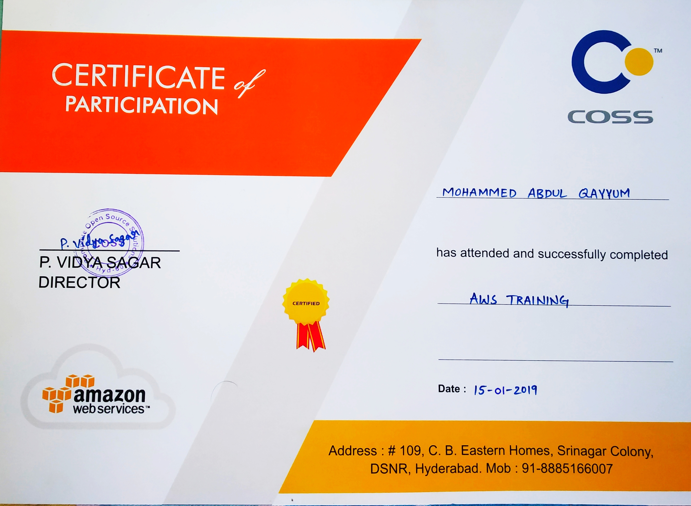
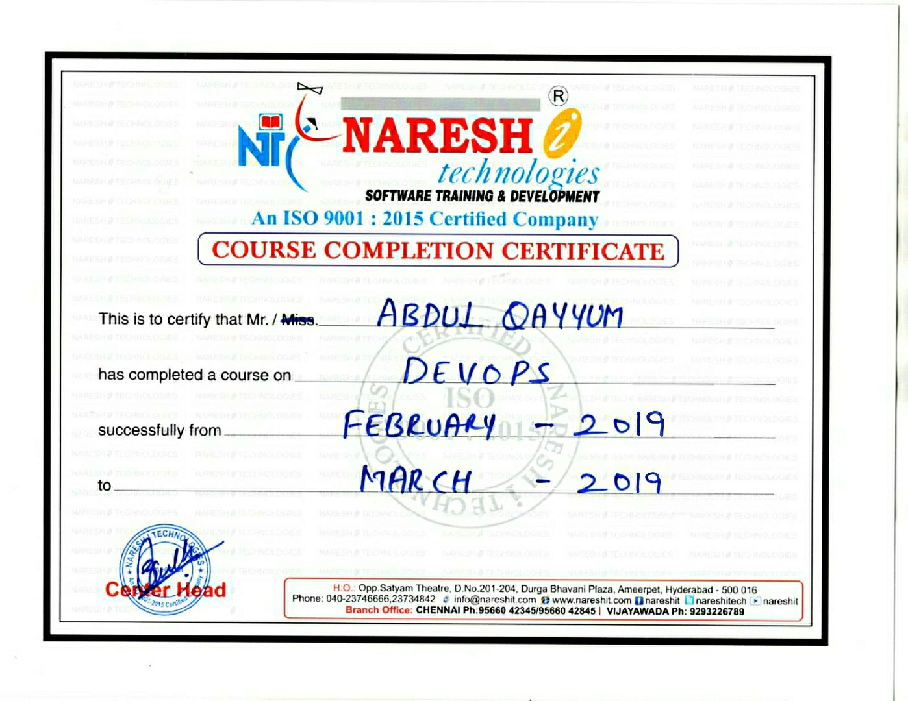
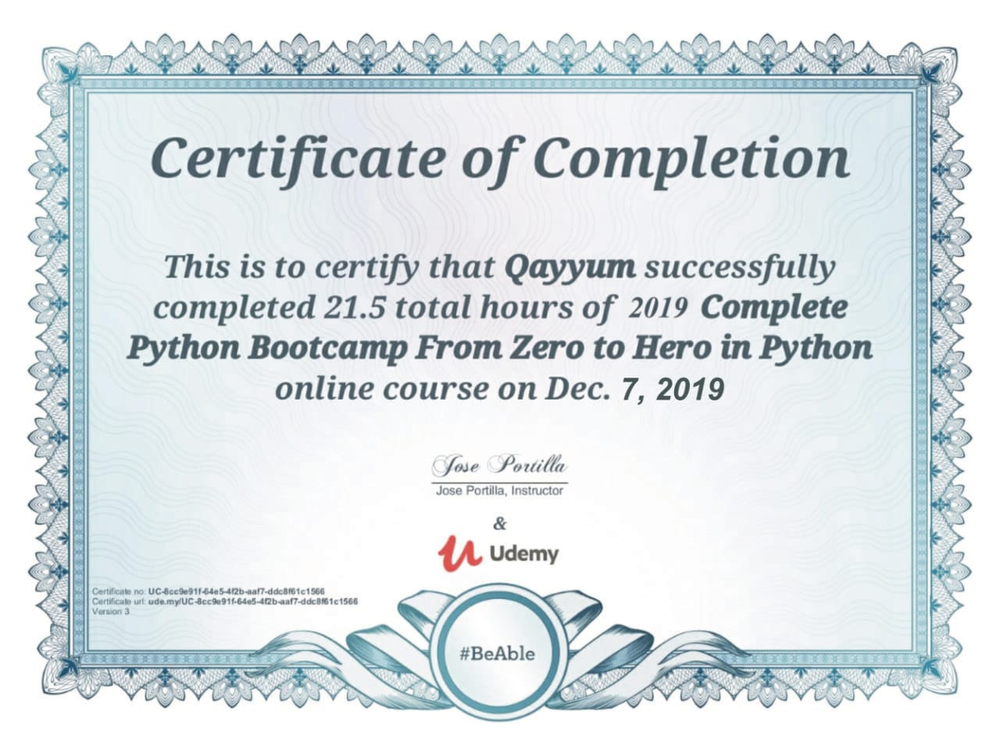
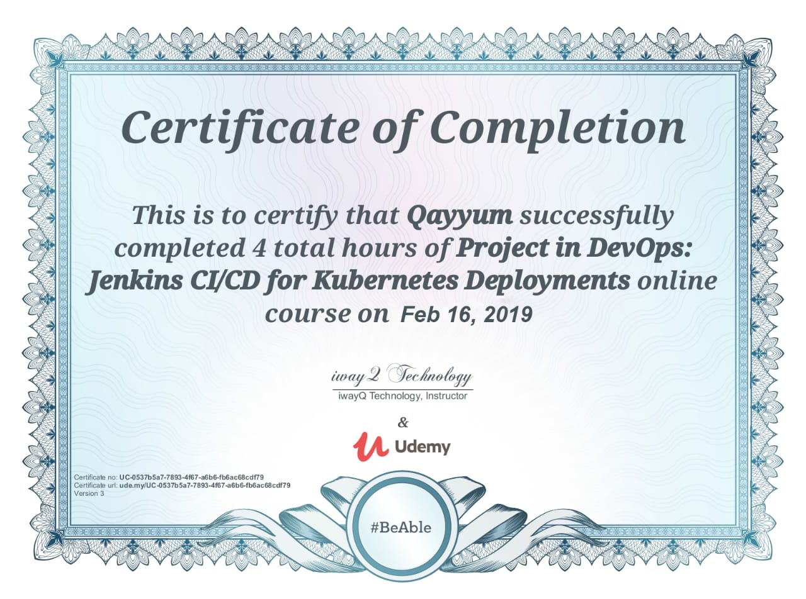
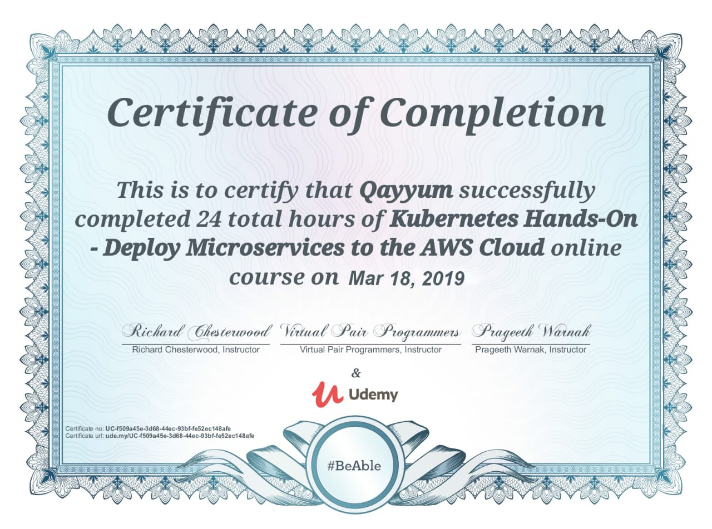
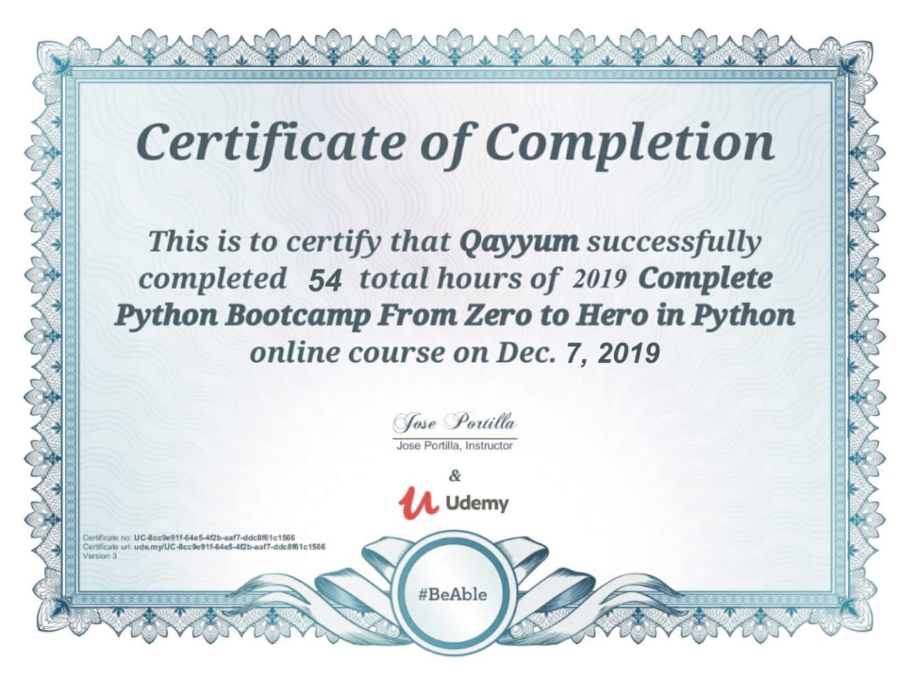

Qayyum
@AbdulQayyum
Name : Abdul Qayyum
Mobile : (+91-)9700535779
Email : qayyum0003@email.com
Location : Hyderabad
technical skills
| DevOps Tools | Jenkins,Ansible,Docker,Kubernetes,Maven,SonarQube,Selenium,Jfrog Artifactory,Nagios,Github |
| Amazon Web Services | Ec2,vpc,S3,IAM,Route53,EBS,Auto-Scaling,Databased,Cloud Watch,SNS,SQS,CloudFormation,CloudFront,Terraform,Eks |
| Languages | Python,Yaml,html,JavaScript |
| Web design/development | html,Css,bootstrap,javascript,Node.js,mongodb |
| scripting | Python,Bash |
| Databases | mysql,MongoDB |
| Monitoring Tools | Nagios,Cloud Watch |
| Operating Systems | Windows,Linux,Unix |
| Build & Bug Tracking Tools | Maven,Selenium,SonarQube |
| Container & Container Orchestration | Docker,kubernetes,Elastic K8s Service(EKS) |
Professional summmery
- 1.5+ Years of IT industry experience in DevOps/ Agile operations, Linux Administrator and Amazon Web Services(aws).
- Working knowledge on aws cloud IaaS ,SaaS ,and PaaS Services.
- Extensive working experience with broad range on AWS Cloud Services like Ec2,vpc,S3,IAM,Route53,EBS,Auto-Scaling,Databased,Cloud Watch,SNS,SQS,CloudFormation,CloudFront,Terraform & Eks.
- Worked on core AWS services such as setting up EC2 instances in AWS, configuring security groups, and setting up Elastic IP's and Configured Elastic Load Balancers (ELB) with EC2 Auto-scaling groups.
- Experience in Infrastructure Development and Operations involving AWS Cloud platforms.
- Experience in Implementing Continuous Integration and Continuous Delivery (CI/CD) pipeline with Docker, Maven, Ansible ,SonarQube selenium, Jfrog Artifactory, kubernetes, Jenkins and AWS.
- Experience in Linux Administration (Installation, Configuration ,running application and Upgrades of Linux).
- Experience in version control using GIT and GITHUB and continuous integration management using Jenkins.
- Experience using Maven as build tools for the building of deployable artifacts (jar, war and ear) from source code.
- Managed environments DEV,QA and PROD for various releases and designed instance.
- Experience in Using Jfrog artifactory for storing versions of artifactory, selenium and SonarQube for bugs tracking and qulity check.
- Expertise with configuration management automation tool Ansible and has worked on integrating Ansible with different project.
- Configured Apache web server in the Linux AWS Cloud environment using Ansible automation.
- Experience in Creating Docker images using a Docker file, worked on Docker container snapshots, managing Docker volumes and used Kubernetes for orchestration management.
- Worked on Microservices. Deploying Microservices using Kubernetes YAML files.
- Used Kubernetes(kops) to deploy cluster, load balance, and manage Docker containers with multiple namespace versions.
- Good knowledge and hands-on Experience in some monitoring tools like Cloud Watch and Nagios.
- hands on Experience with scripting languages like Python & bash form automating administrator work.
- Designed, configured and managed public/private cloud infrastructures utilizing Amazon Web Services (AWS) including EC2, Auto-Scaling in launching EC2 instances, Elastic Load Balancer, Elastic Beanstalk, S3, Glacier, Cloud Front, RDS, VPC, Direct Connect, Route53, Cloud Watch, Cloud Formation, IAM, SNS, and Lambda.
- Experience in working with container-based deployments using Docker, Docker images, Docker file, Docker Hub, and Kubernetes.
- Involved heavily in setting up the CI/CD pipeline using Jenkins, Maven, Selenium, SonarQube Bitbucket, Jfrog Artifactory, Terraform and AWS.
- Worked on Tomcat Web server for hosting web apps.
- Used MySQL, MongoDB to perform basic database administration.
- worked on web design and development using html, javascript, css ,bootstrap, nodes.js, mongodb
- Team player with excellent interpersonal skills, self-motivated, dedicated and understanding the demands of 24/7 system maintenance and intersted to learning new technologies.
work experience
USIA Pvt. LtdNovember 2019 – October 2020
Role: DevOps/AWS associate
- Worked on core AWS services such as setting up EC2 instances in AWS, configuring security groups, and setting up Elastic IP's and Configured Elastic Load Balancers (ELB) with EC2 Auto-scaling groups.
- Maintained a farm of AWS solution using EC2 instances, ELB's, S3, EBS, Auto Scaling.
- Configured and automated the Jenkins Build jobs for Continuous Integration and Continuous Deployment(CI/CD).
- Provisioned and administered EC2 instances and configuring EBS, Simple Storage(S3) cross region replication, Elastic Load Balancer, configure Auto scaling, setting up CloudWatch alarms, Virtual Private Cloud (VPC).
- Excellent in Setting up monitoring tools like Nagios and Amazon Cloud watch to monitor major metrics like Network packets, CPU utilization, Load Balancer Latency.
- Used Jenkins and pipelines to drive all micro services builds out to the Docker-registry and then deployed to Kubernetes, Created Pods and managed using Kubernetes.
- Implemented Docker - maven-plugin in Maven pom.xml files to build Docker images for all microservices and later used Docker File to build the Docker images from the Java jar files also Created Docker images using a Docker File, worked on Docker container snapshots, removing images and managing Docker volumes.
- Involved in building S3buckets and managing the access permissions using bucket policies and access control lists (ACL) and dealt with object life cycle management and versioning to automate the object archival.
- Setting up Auto scaling for EC2 instances and creating Cloud watch alerts, monitoring for instances and using them in Auto-scaling launch configurations.
- Created Docker compose-file using YAML for deploying MEAN stack(MongoDB, Express, AngularJS, Node JS) applications onto Docker containers before deploying them into production environment.
- Worked on AWS Elastic load balancing(ELB) and AWS Auto Scaling for providing high availability of applications and increasing EC2 instances based on a load of applications.
- Developed Ansible playbooks for automatic deployment and configuration of Linux servers for dev , QA and producting environment.
- Utilized Kubernetes and Docker for the runtime environment of the CI/CD system to build, test and deploy.
- Launched AWS instances using auto-scaling for scaling up and scaling out of ec2 instances while deploying Micro Services into production environment.
- Created customized Amazon Machine Images based on already existing AWS EC2 instances by using create image functionality snapshot for disaster recovery , Auto scaling policy for automating auto-scaling groups, Elastic load balancers, and launch configurations.
- Used databased mysql ,aws RDS & mongodb , create user table, json format, & connected with appliction to communicate & store data.
- worked on web design and development using html, javascript, css ,bootstrap, nodes.js, mongodb.
- written ansible playbook , pyhton and bash script to automate administrator work.
- Worked on Tomcat Web server for hosting web apps. Environment:Jenkins, Ansible, Docker, Kubernetes, Maven, SonarQube, Selenium, Jfrog Artifactory, Nagios, Github, Ec2, vpc, S3, IAM, Route53, EBS, Auto-Scaling, Databased, Cloud Watch, SNS, SQS, CloudFormation, CloudFront, Terraform, Eks, Python, Yaml, html, JavaScript, html, Css, bootstrap, javascript, Node.js, mongodb, Python, Bash, mysql, MongoDB, Nagios, Cloud Watch, Windows, Linux, Unix, Maven, Selenium, SonarQube, Docker, kubernetes, Elastic K8s Service(EKS), apache tomcat.





